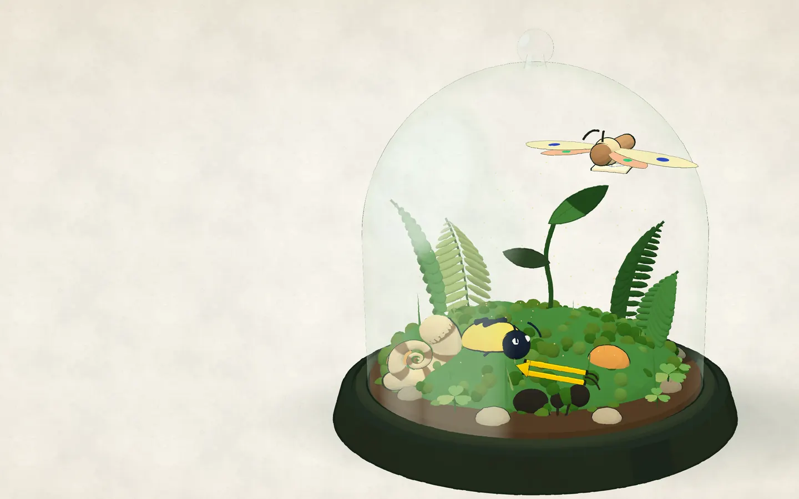

The Vivarium
Asset kit for design 54. A company kept like a terrarium: each product is a creature, alive under glass, catalogued like a naturalist would. Paper and ink, one moss-green spot colour, storybook 3D built from primitives, and 17th-century specimens from The Met's open-access collection.
Contents: identity · palette · type · hero · live 3D · specimens · herbarium · extras · motion

hero/terrarium-hero@1x|@2x.webp|avif · 2880×1800 · three.js primitives, toon-shaded, ink wobble, baked from live/render.html